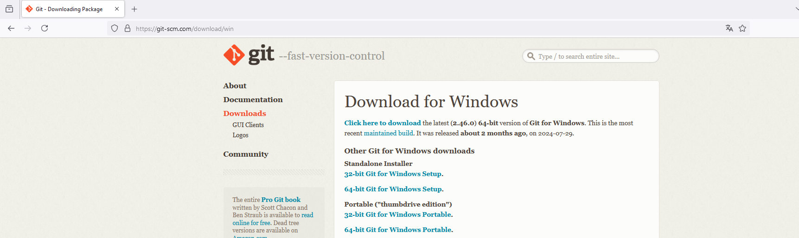
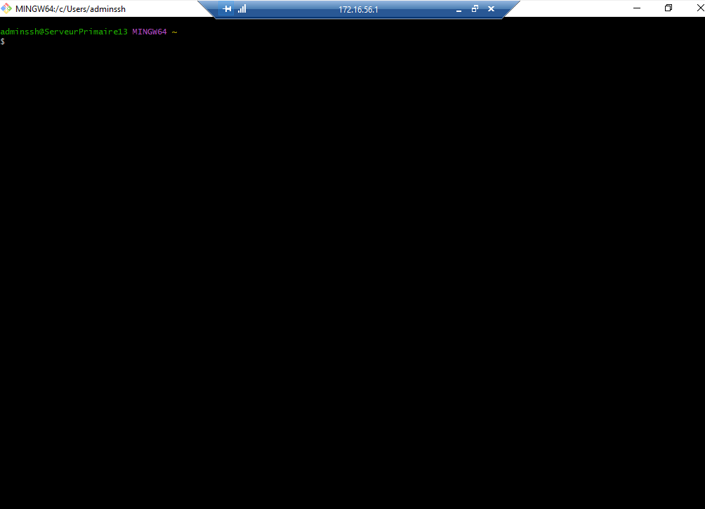
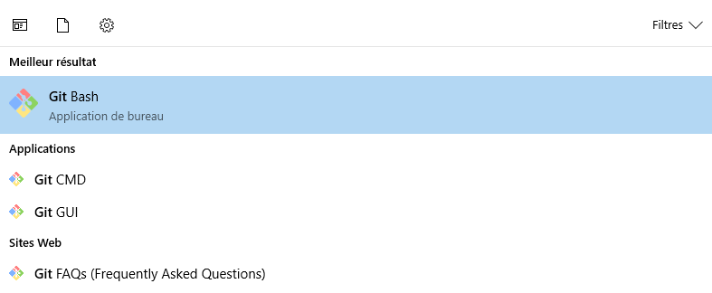
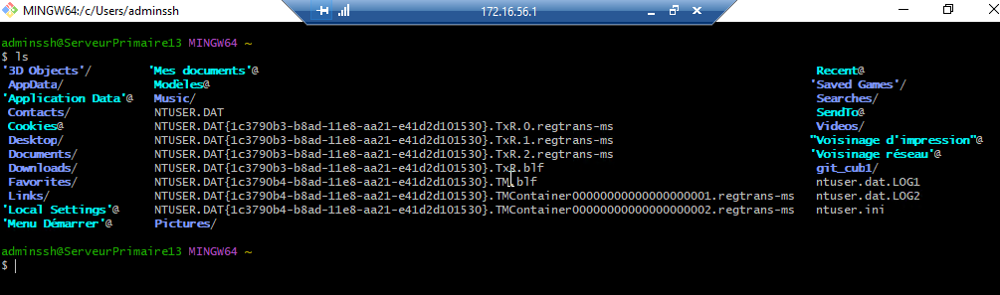
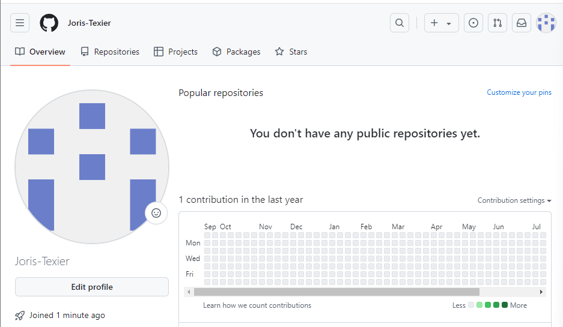
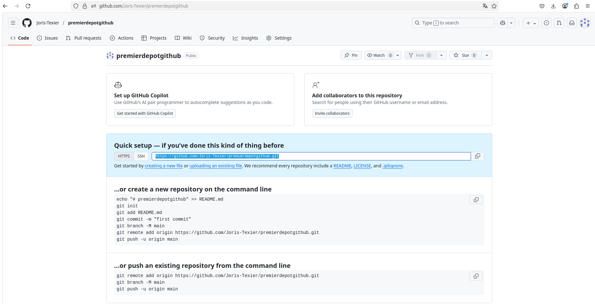
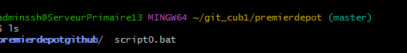

Situation2 - AdminSys - CUB¶

Mise en place et découverte d’un environnement de développement Git¶
Présenté par : Joris Texier
Date de rédaction : 17 septembre 2025
Version : 1
Sommaire¶
- Partie 1 : Installation de l’environnement Git
- Partie 2 : Initialisation de l’environnement Git
- Partie 3 : Gérer les versions (commits) en local
- Partie 4 : Gérer les dépôts sur GitHub à distance
Partie 1 : Installation de l’environnement Git¶

Installation de Git sur le serveur¶
Une fois l’installation terminée, ouvrez le logiciel Git. 
Pour vérifier que Git Bash, Git GUI et Git CMD sont bien installés, lancez Git Bash et testez une première commande : 
git version
Créez ensuite un dossier à la racine de votre disque local via Git Bash nommé git_cub1.
Celui-ci contiendra l’ensemble de vos dépôts.

Créez un compte à votre nom sur le site GitHub. 
Partie 2 : Initialisation de l’environnement Git¶
Préparation de la configuration initiale de Git en local, qui sera conservée pour tous vos projets :
git config --global user.name "Joris Texier"
git config --global user.email "joristexier37290@gmail.com"
Vérifier la prise en compte des informations :
git config --global --list
Vérifier l’accès à l’aide des commandes git ou git --help.
Positionnez-vous dans le dossier git_cub1 :
cd git_cub1
Initialiser un premier dépôt local :
mkdir premierdepot
cd premierdepot
git init
Partie 3 : Gérer les versions (commits) en local¶
Création d’un premier script¶
Créer un fichier script0.bat dans le dossier premierdepot :
nano script0.bat
Y insérer le contenu suivant :
@echo off
echo Ceci est mon premier script sous git
netstat -ano
pause
Enregistrer avec Ctrl + O, puis quitter avec Ctrl + X.
Valider la première version¶
Ajouter le fichier dans la zone de préparation (index) :
git add .
# ou
git add --patch script0.bat
Vérifier l’état du dépôt :
git status
Réaliser le premier commit :
git commit -m "mon premier commit"
Vérifier de nouveau le statut :
git status
Lister les commits :
git log
Modifier le script¶
Éditer le fichier script0.bat :
@echo off
echo Ceci est mon premier script sous git
netstat -ano
ipconfig
pause
Ajouter la modification :
git add .
Créer un second commit :
git commit -m "mon deuxième commit"
Lister les versions du dépôt :
git log
Revenir à une version précédente¶
Pour revenir à la première version du script :
git checkout 3a599ce
Puis revenir à la version la plus récente (branche principale) :
git checkout master
Partie 4 : Gérer les dépôts sur GitHub à distance¶

Cloner un dépôt distant¶
git clone https://github.com/Joris-Texier/premierdepotgithub

Lien du dépôt GitHub :
🔗 https://github.com/Joris-Texier/premierdepotgithub
Copier un fichier dans le dépôt GitHub local¶
cp script0.bat /C/Users/adminssh/git_cub1/premierdepot/premierdepotgithub
Résumé des commandes principales utilisées¶
| Action | Commande |
|---|---|
| Vérifier la version de Git | git version |
| Configurer le nom | git config --global user.name "Joris Texier" |
| Configurer l’adresse mail | git config --global user.email "joristexier37290@gmail.com" |
| Initialiser un dépôt local | git init |
| Ajouter un fichier | git add . |
| Valider une version | git commit -m "message" |
| Voir les commits | git log |
| Changer de version | git checkout <id_commit> |
| Cloner un dépôt distant | git clone <url> |